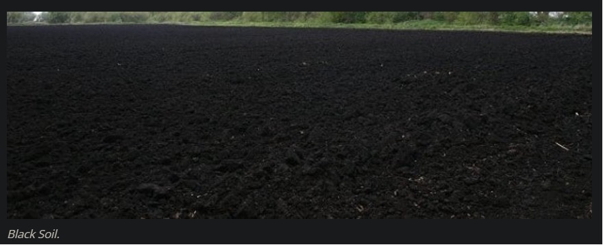
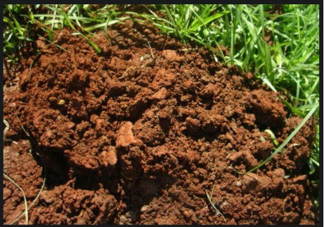
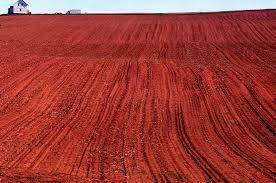
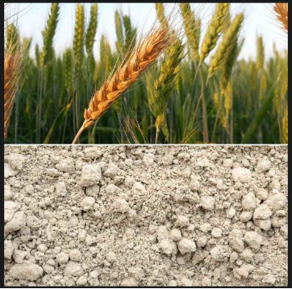
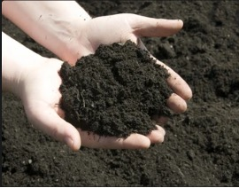

| State |
Soil Type |
Characteristics |
Crops Grown |
MAHARASHTRA |
BLACK SOIL |
Black soils are rich in iron, lime, magnesium, and aluminum. However, they are poor in phosphorus, nitrogen, and humus (organic matter). Usually, this soil gets its black color from various salts or humus during soil formation. Black soils contain a large amount f clay but are sandy as well in hillier regions of the country. Black soils become sticky when wet and develop wide cracks during the dry season. |
Cotton, Rice, sugarcane, wheat, Jowar, linseed, sunflower, cereal crops, citrus fruits, vegetables, tobacco, groundnut, any oilseed crops, and millets. |
|  |
LATERITE SOIL |
These soils are acidic in nature and are poor in humus (organic matter)phosphate, nitrogen, and calcium. Laterite soils are very rich in iron. |
cotton, rice cultivation, wheat cultivation, pulses, tea, growing coffee, growing rubber, growing coconut, cashews. |
|  |
RED SOIL |
These soils are sandy and somewhat acidic and rich in potash. However, they are very poor in lime, nitrogen, phosphorous, magnesium, organic matter (humus).
|
Rice, wheat, sugarcane, maize/corn, groundnut,
ragi and potato, oilseeds, pulses, millets, and fruits such as mango, orange, and vegetables |
GUJARAT |
BLACK SOIL |
Black soils are rich in iron, lime, magnesium, and aluminum. However, they are poor in phosphorus, nitrogen, and humus (organic matter). Usually, this soil gets its black color from various salts or humus during soil formation. Black soils contain a large amount f clay but are sandy as well in hillier regions of the country. Black soils become sticky when wet and develop wide cracks during the dry season. |
Cotton, Rice, sugarcane, wheat, Jowar, linseed, sunflower, cereal crops, citrus fruits, vegetables, tobacco, groundnut, any oilseed crops, and millets. |
|
LATERITE SOIL |
These soils are acidic in nature and are poor in humus (organic matter)phosphate, nitrogen, and calcium. Laterite soils are very rich in iron. |
cotton, rice cultivation, wheat cultivation, pulses, tea, growing coffee, growing rubber, growing coconut, cashews. |
PUNJAB |
ALLUVIAL SOIL |
The soil is porous because of its loamy (equal proportion of sand and clay) nature. Porosity and texture provide good drainage and other conditions favorable for agriculture.
These soils are constantly replenished by the recurrent floods.
|
rice, wheat, sugarcane, tobacco, cotton, pulses, oilseeds, jute, maize, oilseeds, leguminous crops, vegetables, and fruits. |
 |
LOAMY SOIL |
In gardens and lawns, sandy loam soils are capable of quickly draining excess water but can not hold significant amounts of water or nutrients for your plants. Plants grown in this type of soil will require more frequent irrigation and fertilization than soils with a higher concentration of clay and sediment. Sandy loam soils are often deficient in specific micronutrients and may require additional fertilization to support healthy plant growth. |
wheat, sugarcane, cotton, pulses, and oilseeds. |
WEST BENGAL |
LATERITE SOIL |
These soils are acidic in nature and are poor in humus (organic matter)phosphate, nitrogen, and calcium. Laterite soils are very rich in iron.
|
rice, wheat, sugarcane, tobacco, cotton, pulses, oilseeds, jute, maize, oilseeds, leguminous crops, vegetables, and fruits. |
|
RED SOIL |
These soils are sandy and somewhat acidic and rich in potash. However, they are very poor in lime, nitrogen, phosphorous, magnesium, organic matter (humus). |
Rice, wheat, sugarcane, maize/corn, groundnut,
ragi,vegetables, oilseeds, pulses, millets
|